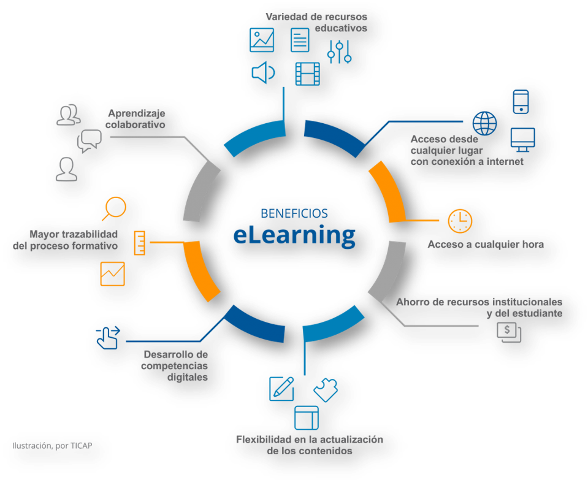
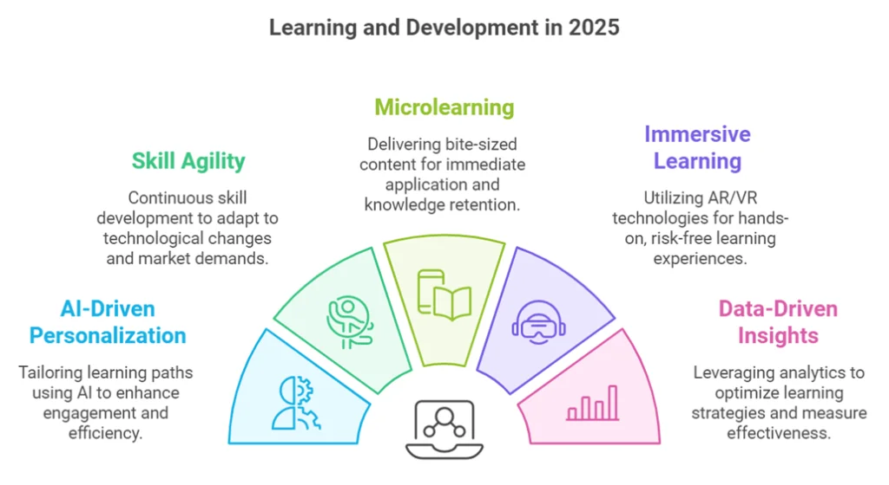

Lección 2

APRENDIZAJE ELECTRÓNICO
El aprendizaje electrónico en cualquiera de sus modalidades (e-learning, b-learning, m-learning, u-learning, flipped classroom, microlearning, etc.), hace uso de las herramientas digitales en mayor o menor proporción junto a estrategias convencionales y por ello debemos contar con el sustento teórico y metodológico para sumarnos a esta vorágine tecnológica que impacta nuestras vidas. La presencialidad tiene importantes aportes irremplazables a la formación desde diferentes puntos de vista, sin embargo, presenta áreas de oportunidad y debilidades que la utilización de herramientas digitales pueden cubrir de manera muy eficiente siguiendo una ruta de aprendizaje objetiva, coherente y en concordancia al contexto en que se presenta la necesidad, dificultad o problema formativo.
¿Qué podemos esperar de las tecnología en el ámbito formativo y educativo 2025?
- Aprendizaje Híbrido y Personalizado. La combinación de entornos presenciales y virtuales se ha consolidado como un estándar en la educación. Sin embargo, el enfoque ha evolucionado hacia un aprendizaje más personalizado, impulsado por herramientas de inteligencia artificial (IA) que analizan el progreso de los estudiantes y ofrecen contenidos adaptados a sus necesidades individuales.
- Microaprendizaje y Gamificación. La atención limitada en un mundo lleno de distracciones ha llevado al auge del microaprendizaje: cápsulas cortas de contenido accesibles desde cualquier dispositivo. Complementado con la gamificación, esta tendencia no solo mejora la retención de conocimientos, sino que también incrementa la motivación y el compromiso del estudiante.
- Realidad Extendida (XR). Tecnologías como la realidad aumentada (AR) y la realidad virtual (VR) permiten experiencias de aprendizaje inmersivas que simulan situaciones reales. Desde simulaciones médicas hasta entrenamiento en habilidades blandas, estas herramientas transforman la forma en que se adquieren conocimientos.
- Data Analytics y Learning Analytics. Los sistemas de gestión del aprendizaje (LMS) integran análisis avanzados que permiten a los instructores identificar patrones, predecir resultados y personalizar estrategias educativas. Este enfoque basado en datos optimiza el aprendizaje y la toma de decisiones.
- E-learning Verde. En un mundo cada vez más consciente de la sostenibilidad, el e-learning reduce significativamente la huella de carbono al eliminar la necesidad de traslados y materiales impresos. En 2025, muchas organizaciones priorizan plataformas y prácticas educativas amigables con el medio ambiente.
